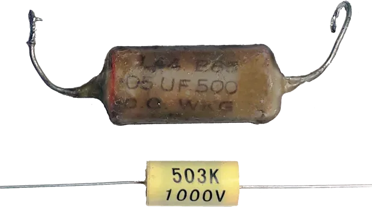

Capacitor Archive is a place to upload images and historical information about vintage capacitors (originally called condensers) in a format similar to Wikipedia or Radiomuseum.org. Capacitors are one type of electrical component found in antique radios, TVs and other electronic equipment.
 When collectors restore these old electronics, most original capacitors must be removed and replaced since many have failed over time. As these old radio components are replaced with modern equivalents, some of the historical value and ascetic is lost. It is my hope that this website will help to preserve the history of these old components. In addition, when restoring rare radios, some collectors will create visual reproductions of the capacitors by printing out paper labels, and attaching them to modern ones. A feature of this website will be to have printouts of capacitor labels for creating reproductions.
See the GitLab page for this website for all technical information. It uses an Angular front end and a Spring back end This web application uses DevOps practices to perform test and deploy the application when a commit is made to the repository. An Angular front end and Spring backend have been implemented.
I am a computer science student in New Zealand interested in radios and old electronics. While repairing antique radios, I am fascinated by the sci-fi looking valves/vacuum tubes on the outside, and the colourful resistors and capacitors on the insides.
{kind=link}